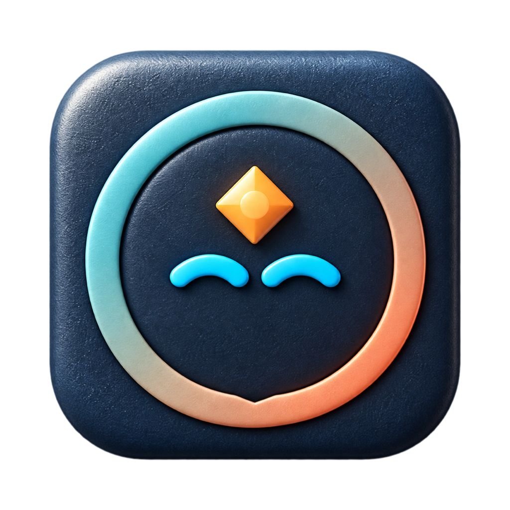
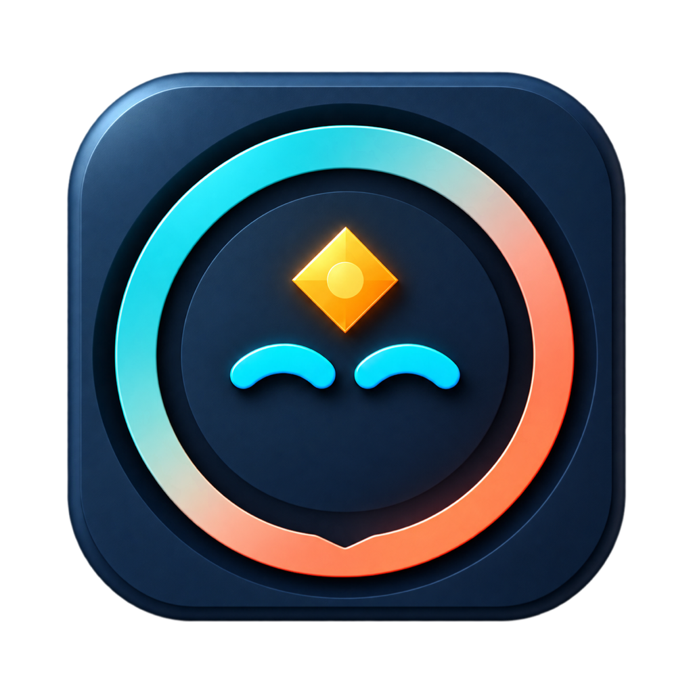

All six alternatives use Original’s 824-pixel visible size on a 1024-pixel canvas. Artwork is centered without stretching. These rows show real display sizes; Retina screens use the full-resolution PNGs.


Artwork changes only. The macOS Dock still returns to the installed bundle icon after quitting. iOS exports remain opaque navy-backed images.